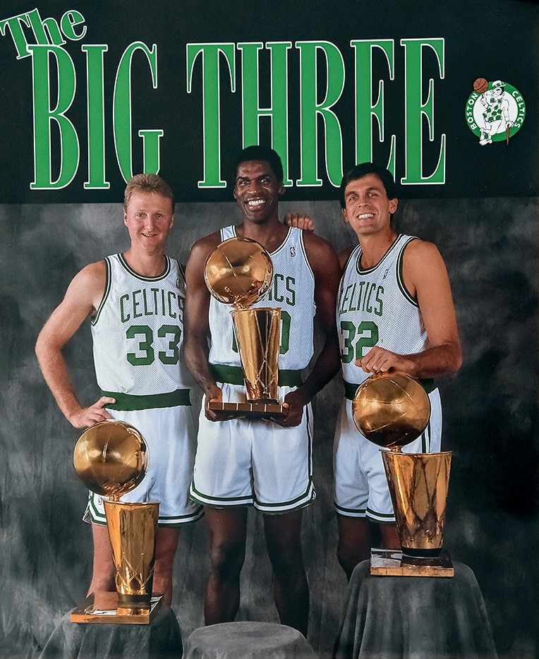

HISTÓRIA
Os Boston Celtics, conhecidos também como Celtics, são uma franquia de basquetebol filiada à
National Basketball Association (NBA) e situada na cidade de Boston, no estado de Massachusetts.
Fundado a 6 de junho de 1946, é uma das únicas equipes que se mantém desde que foi criada. É
propriedade da Boston Basketball Partners LCC e joga os seus jogos em casa no TD Banknorth Garden,
dividindo o ginásio com o Boston Bruins, da National Hockey League. É conhecido mundialmente por
obter 17 títulos da NBA, o que o deixa como o maior vencedor da história da liga.

Big-Three do Boston Celtics nos anos 80, da esquerda para a direita: Larry Bird, Robert Parish e
Kevin McHale
Apontada como uma das melhores equipes de basquetebol de todos os tempos, os Celtics dominaram a
liga de 1957 a 1969, quando conquistaram 11 de 13 campeonatos, com destaque para o período de
1959-1966, quando foi campeã oito vezes consecutivas, sequência que permanece até os dias de hoje
como a maior de toda a história do esporte dentro dos Estados Unidos. No Hall da Fama do
Basquetebol, jogadores como Bill Russell, John Havlicek, Bob Cousy, Larry Bird e o treinador Red
Auerbach fizeram história nos Celtics.
Na temporada 2007-08, após 22 anos sem conquistar a NBA, foram contratados Ray Allen e Kevin Garnett
com o objetivo de resgatar a história da franquia. A dupla se juntou com o ala Paul Pierce, formando
o novo "Big Three". O investimento foi um sucesso, resultando em 66-16 na Temporada Regular e o
título sobre o Los Angeles Lakers na grande final. Dois anos mais tarde, chegou a mais uma decisão
após o título da Conferência Leste diante dos Orlando Magic. Possui uma superioridade em finais
(9-3) contra o seu maior rival, os Los Angeles Lakers. Durante toda a história da NBA, teve quatro
jogadores premiados como o Most Valuable Player of the Year (Jogador mais valioso da temporada), são
eles, Bill Russell, Bob Cousy, Dave Cowens e Larry Bird.